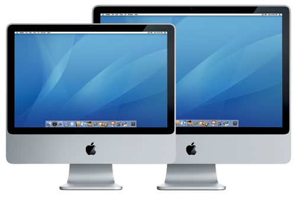

- Durante o workshop vamos usar muitos estrangeirismos. Se não compreenderem um conceito ou o meu pobre sotaque, interrompam-me.
- Pausas
- Oferta WebHS / site temporário
- Acessos (Drive, grupo dúvidas, etc)
- Slides
- Prática
- Backups
2021
Os websites não são iguais ao layout que o designer fez!1991
1991
O ano em que a profissão Web Designer foi criadaTinhamos duas possibilidades, 14 ou 15 polegadas
1024x768
1152x864 (17 polegadas)
Era tudo mais fácil!
- Sabiamos TODAS as resoluções dos nossos visitantes
- Usávamos um layout fixo, baseado em tabelas
- Poderiamos prever como é que os sites iriam funcionar
- Os sites eram iguais ao layout que o designer fazia
Mas claro, nem tudo eram rosas

1996
Nasceu o primeiro clone animal, a ovelha Dolly

1996
A primeira versão de CSS era suportada pelo W3C - World Wide Web Consortium
Fonte: https://www.w3.org/Style/CSS20/
2003
O WordPress foi criado, um fork de uma plataforma de blogs chamada b2.2003
já tinhamos ecrãs finos
21, 24 e 27 polegadas
1920x1080 monitores HD
2560x1440 em monitores 27 polegadas (os primeiros iMac)
2007
S**t hit the fan
introdução do iPhone2010
introdução do iPadEthan Marcotte - blog A List Apart
Fonte: https://alistapart.com/article/responsive-web-design/
O artigo introduziu o conceito de responsive design. Ethan afirma que deveriamos aceitar que já não deveriamos desenhar sites para serem utilizados com um teclado e um rato. Dispositivos móveis começavam a aparecer e previa-se que o tráfego móvel fosse superior ao desktop em 3 a 5 anos.
Havia também browsers noutros dispositivos, como consolas de videojogos, que estavam ligadas ainda a outros tipos de ecrans.
O que é responsive web design?
- Considerado "best practice"
- Engloba todos os ecrans
- Utiliza media queries para definir breakpoints
- O layout, os elementos e os seus tamanhos podem todos mudar num breakpoint específico
Smashing Magazine
Klientboost
Dropbox
2021
Os websites não são iguais ao layout que o designer fez!Problemas com o responsive design
- Vamos perdendo o whitespace à medida que vamos perdendo área de ecrã.
- As proporções de elementos podem mudar não respeitando a proporcionalidade
- O espaço que existe para um bloco de texto muda nos diversos ecrãs e há mudanças de linha em palavras diferentes. O que pode causar problemas de leitura.
- Várias áreas do site em desktop podem não fazer sentido existir em mobile.
Outros problemas:
- É mais difícil desenhar, pois envolve mais ecrãs
- Podemos aproximar as intenções do designer criando vários breakpoints
- O que resulta em ficheiros CSS mais pesados
- Mais tempo de desenvolvimento
- Se o design não tiver vários breakpoints, vai existir diferenças entre o produto final vs o que o cliente aprovou